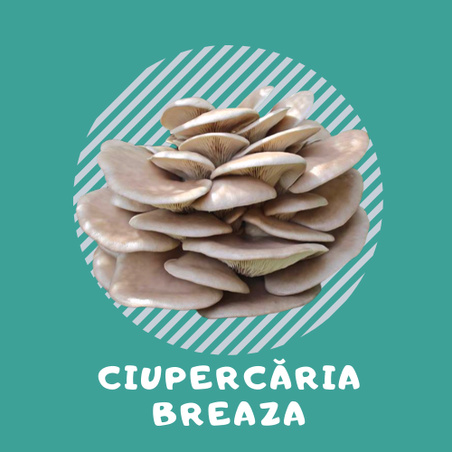
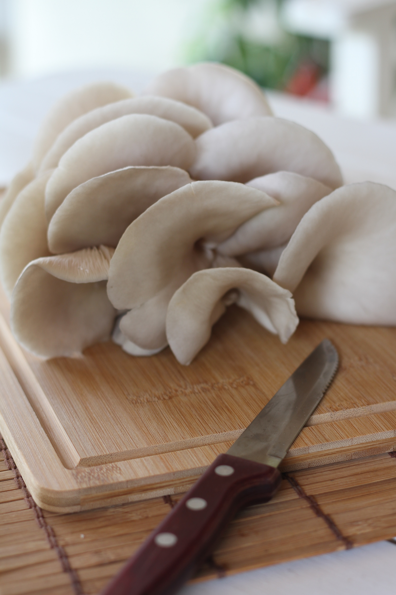

| Acasă | Despre noi | Rețete | Galerie | Comandă aici | Contact |
|
Ciupercăria Breaza |
 |
Ciupercile Pleurotus sunt foarte gustoase și aduc foarte multe beneficii organismului nostru. Acestea sunt un antibiotic natural eficient, acționează ca antiinflamator și au efect anticancerigen. Reușesc să țină sub control problemele cardiovasculare și valoarea colesterolului.
Mai multe informații despre beneficiile ciupercilor Pleurotus găsiți pe site-ul: https://dieta.romedic.ro
Benefiici:
○ Sunt considerate înlocuitorii sănătoși ai cărnii;
○ Sunt bogate în vitamine din complexul B, vitaminele C și E, acid folic și fosfor;
○ Sunt singurele alimente non-animale care conțin vitamina D;
○ Scad nivelul ridicat al colesterolului și trigliceridelor;
○ Reduc procesele de îmbătrânire celulară, fiind antioxidante;
○ Protejează organismul de infecții;
○ Au rol hepatoprotector;
○ Au rol antidiabetic;
○ Sunt indicate în dietele de slăbit, fiind bogate în proteine, însă fără aport de colesterol;
 |
 |
 |